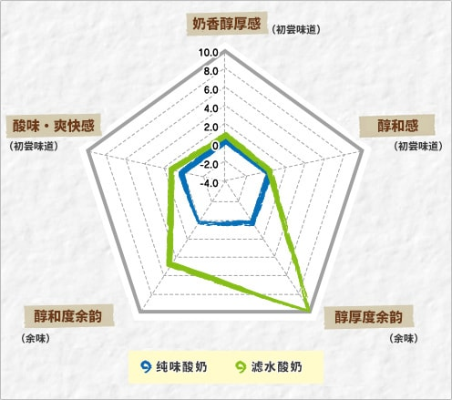

|
首页 ＞ 科学验证！酸奶与料理的神奇关系 ＞ 酸奶×滤水酸奶
酸奶×滤水酸奶将滤水酸奶的味道和普通酸奶进行了比较。
假说：酸奶只需滤水就能改变口感和味道？去掉酸奶中所含水分后的滤水酸奶。滤掉水分后呈奶油状的滤水酸奶会变成与奶油芝士相似的柔滑口感。那么，和普通的纯味酸奶相比，会有怎样的口感和味道变化呢。通过使用将食品的“味道”数值化的味觉传感器进行测定。预先准备工作，是把纯味酸奶的水滤掉，浓缩成约2倍的滤水酸奶（以下简称滤水酸奶）。 味道比较：滤水酸奶其特点是余韵将滤水酸奶的测定值与纯味酸奶比较，首先是放入口中初尝时的“酸味和爽快感”几乎没有差别。纯味酸奶的特点是“清爽的酸味”，滤水酸奶也能保持原样。味道的差异具体表现在余韵上。以纯味酸奶作为标准时，滤水酸奶的“醇和度余韵”为高出4.44%，“醇厚度余韵”为高出9.72%。每1分浓度差约20%，这是大多数人都能感觉到不同味道的浓度差异，因此区别很大。  ※株式会社明治 调查
营养成分比较：滤水酸奶的蛋白质和脂质含量高接着比较每100g中主要的营养成分。 营养成分（每100g中）
蛋白质比较，纯味酸奶为3.4g，滤水酸奶为6.5g。决定醇厚度的脂质比较，酸奶为3.0g，滤水酸奶为6.1g。 结论：经过滤水，酸奶中的蛋白质和脂质均有提高，口感更加醇和浓厚酸奶经过去水浓缩后，蛋白质和脂质的比例均有提高。其结果，酸奶原来的清口酸味得到保留，而“醇和度余韵”及“醇厚度余韵”均有增加。如能充分发挥这些口感和味道的特点，那么酸奶的烹饪使用方法也会大大地得到扩大。首先可将其代替奶油芝士，放在小薄片面包或烤面包上加热。滤水时分离出来的水分被称为“乳清”，因其含有丰富的来自乳液的钙，因此不要扔掉，可作有效利用。
|